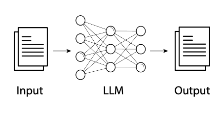
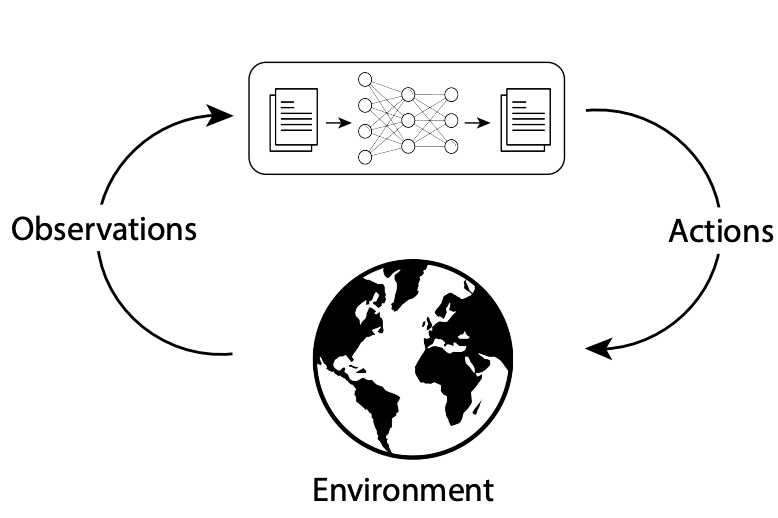

Module 1: Understanding Large Language Models
Large Language Models (LLMs) are sophisticated AI systems trained on vast amounts of text data that can understand, generate, and manipulate human language. These powerful tools form the foundation of modern AI applications like chatbots, content generators, and virtual assistants.
What You'll Learn
In this module, you'll master the following key areas:
- Context Window: How LLMs process and limit information
- Tokenization: How text is broken down for model processing
- Embeddings: How LLMs represent meaning and relationships
- Logits & Temperature: How LLMs make predictions and control creativity
- Response Format: How to structure and interpret model outputs
- Model Evolution: Advances in LLM architectures and capabilities
1. Context Window: The Container of Information
Concept: The context window is the maximum number of tokens that can be processed in a single API call, including both the input prompt and the generated output.
Everyday Example: Think of the context window like a container with a fixed size. Your prompt takes up part of this container, and the remaining space is available for the model's response.
(3,000 tokens)
(5,000 tokens)
Context Window: 8,000 tokens total
Practical Application: Your prompt size + maximum desired response length must fit within the context window. If you request a longer response than available in the context window, the model will stop generating at the limit.
2. Tokenization: Breaking Down Text
Concept: Tokenization splits text into small pieces called tokens that the model can process within its context window.
Everyday Example: Think of tokenization like cutting a pizza. The whole pizza is your full text, and the slices are your tokens.
Input Text: "Machine learning is fascinating"
Model A tokenization:
Model B tokenization:
Practical Application: Understanding tokenization helps you optimize prompts to fit within context window limits and manage costs effectively. For English text: 1 token ≈ 4 characters or ¾ of a word on average. Code typically uses more tokens than natural language.
3. Embeddings: Understanding Meaning
Concept: Embeddings are numerical representations of tokens that capture their meaning in a mathematical space.
Everyday Example: Imagine a map where similar words are clustered together. "Happy" and "joyful" would be neighbors, while "happy" and "sad" would be far apart.
Words with similar meanings cluster together in embedding space, while different concept groups remain separate
Practical Application: Embeddings allow models to understand semantic relationships and make connections between concepts that weren't explicitly mentioned.
4. Logits: Making Predictions
Concept: Logits are raw numerical scores the model assigns to each possible next token before making its final selection. The text generation process has two phases: First, the model processes your prompt to calculate these logits, which are then converted to probabilities for each potential next word. This calculation phase is deterministic - identical inputs always produce the same probability distribution. Second, the model selects tokens from this distribution, either predictably (by always choosing the highest-probability token) or with controlled randomness to balance accuracy with creativity.
Everyday Example: When completing "The capital of France is ____," a model assigns high scores to relevant answers like "Paris" and low scores to irrelevant options like "banana."
Input: "The capital of France is"
How Token Selection Works
| Rank (k) | Token | Raw Logit | Base Probability |
|---|---|---|---|
| 1 | "Paris" | 8.2 | 80% |
| 2 | "Lyon" | 4.6 | 10% |
| 3 | "Nice" | 3.9 | 5% |
| 4 | "Marseille" | 3.2 | 3% |
| 5 | "banana" | -5.0 | 0.1% |
| 6+ | Other tokens | varies | 1.9% |
Temperature
Modifies the probability distribution itself. Lower temperatures make the model more deterministic, leading to predictable outputs, while higher temperatures introduce more randomness and creativity
- Low (0.2): Makes likely tokens even more likely
- High (1.0): Makes distribution more uniform
topP (Nucleus Sampling)
Considers only top tokens that sum to P probability
- topP = 0.9: Only "Paris", "Lyon", "Nice" considered (95% cumulative)
- topP = 0.8: Only "Paris" considered (80% cumulative)
topK
Considers only K most likely tokens
- topK = 3: Only "Paris", "Lyon", "Nice" considered
- topK = 1: Only "Paris" considered
Combined Effect: These parameters work together to control selection. Temperature modifies the distribution, then topP and topK filter which tokens can be selected from the modified distribution.
Practical Application: The temperature, topP, and topK parameters control creativity vs. predictability in responses. These parameters let you balance deterministic, factual outputs with more creative, varied responses.
5. Response and Structured Output
Concept: Models can format outputs as either free-form text or structured data (JSON, XML, etc.).
Everyday Example: Compare asking for weather information as a casual description versus a formatted weather report with specific fields.
"It's sunny and 72°F with light winds from the west."
- Easy for humans to read
- Natural conversational style
- Less predictable structure
"weather": {
"temperature": "72°F",
"condition": "sunny",
"wind": {
"speed": "light",
"direction": "west"
}
}
}
- Machine-readable format
- Consistent, predictable structure
- Easy to process programmatically
Practical Application: Structured outputs are essential when the AI's response needs to be processed by other systems rather than read by humans.
6. LLM Evolution & Architectural Advances
Early LLM Development (2017-2022)
The modern Large Language Model era began with the 2017 paper "Attention Is All You Need," which introduced the Transformer architecture. This revolutionary approach replaced recurrent neural networks with three key innovations:
- Self-attention mechanism: Allowing models to connect related words regardless of distance
- Parallel processing: Enabling simultaneous rather than sequential computation
- Flexible architecture: Supporting various NLP tasks through encoder-decoder components
Following this breakthrough, researchers discovered the "scaling law" phenomenon: model capabilities improve predictably when increasing parameters, training data, and computing power. This insight led to a rapid expansion in model size:
| Year | Model | Parameters | Key Advancement |
|---|---|---|---|
| 2018 | BERT | 340M | Bidirectional understanding |
| 2020 | GPT-3 | 175B | Few-shot learning capabilities |
| 2022 | PaLM | 540B | Improved reasoning abilities |
The scaling era culminated with the release of ChatGPT on November 30, 2022, which brought LLMs into mainstream use through its user-friendly interface and impressive capabilities.
The Rise of Reasoning Models (2023-Present)
Around 2023, a new generation of models emerged with enhanced reasoning abilities, representing a significant leap beyond simple pattern recognition. To build these reasoning models, training approaches evolved from basic transformer architectures to include explicit reasoning demonstrations, self-critique methods, and human feedback on multi-step solutions.
| Aspect | Description |
|---|---|
| Key Capabilities | • Structured problem-solving: Breaking down complex tasks into clear, logical steps • Self-consistency checking: Detecting and correcting contradictions in their own reasoning • Extended reasoning chains: Following longer, more complex logical arguments • Understanding cause and effect: Recognizing how events relate and influence outcomes |
| Current Limitations | • Complex multi-step reasoning: Still struggle with novel mathematical proofs and multi-constraint optimization • Specialized domain knowledge: Difficulty with advanced legal reasoning or medical diagnosis • Spatial reasoning: Inconsistent performance on complex physical systems or 3D visualization problems |
| Notable Examples | • ChatGPT o1: OpenAI's model with improved mathematical and logical reasoning • Claude 3.7 Sonnet: Anthropic's model with structured problem-solving capabilities • DeepSeek-R1: Notable for performance on academic reasoning benchmarks |
| Real-World Impact | Higher accuracy on complex tasks, fewer hallucinations, and more reliable performance—making reasoning models the foundation for building autonomous AI agents |
Note: When a model shows its reasoning, all reasoning steps count toward the context window limit and output token costs. Parameters like max_tokens and budget_tokens can control total output length and costs.
Quiz: Which training approach below is specifically designed to enhance an LLM's reasoning capabilities?
- A) Next-token prediction
- B) Chain-of-thought training
- C) Masked language modeling
- D) Decoder-only architecture
Current Limitations of LLMs
Despite impressive advances, even today's most sophisticated models face significant challenges:
| Limitation Type | Description |
|---|---|
| Hallucinations | Generate plausible but factually incorrect information; invent citations; blend facts with fiction |
| Knowledge Boundaries | Fixed knowledge cutoffs; limited context windows (8K-200K tokens); inability to verify information |
| Reasoning Limitations | Struggle with complex multi-step reasoning; limited mathematical capabilities; domain knowledge gaps |
- Struggle with complex multi-step reasoning (e.g., solving novel mathematical proofs or multi-constraint optimization problems)
- Difficulty with tasks requiring specialized domain knowledge (e.g., advanced legal reasoning or medical diagnosis)
- Inconsistent performance on spatial reasoning tasks (e.g., complex physical systems or 3D visualization problems)
Assessment: Why do LLMs sometimes hallucinate information, and what approaches can developers take to mitigate this problem? (Select all that apply)
- A) LLMs have perfect knowledge but choose to be creative
- B) The statistical nature of prediction sometimes generates plausible but incorrect information
- C) Using retrieval augmentation to ground model responses in verified sources
- D) Training models on larger datasets always eliminates hallucinations
- E) Implementing fact-checking components that verify model outputs
Building Applications with LLMs
There are three primary approaches to building LLM applications, with increasing levels of sophistication:
| Attribute | LLMs + Prompt Engineering | LLMs + Prompt Engineering + External Knowledge | Autonomous Agents |
|---|---|---|---|
| Visual |  |  |  |
| Description | Directly interact with the LLM using carefully crafted prompts. | Enhance LLMs with real-time or domain-specific information from external sources (databases, APIs, documents). | Combine LLMs with tools, memory, and decision-making to create systems that can plan, act, and adapt autonomously. |
| Best For | Simple, self-contained tasks that rely on general knowledge. | Information-rich tasks requiring up-to-date, specialized, or proprietary data. | Complex, multi-step workflows that require reasoning, tool use, and adaptive planning. |
| Use Cases | Text summarization, content generation, classification, translation. | Company data Q&A, research over large document sets, market analysis. | Personal assistants, automated research agents, workflow automation, multi-tool orchestration. |
| Complexity | Low | Medium | High |
| Limitations | Limited by model's context window and training data cutoff; cannot access new or proprietary information. | Dependent on quality and freshness of external data; requires robust retrieval and integration. | Increased system complexity; harder to debug; may have higher latency and operational overhead. |
These three approaches represent a continuum of complexity and capability that we'll explore in greater detail in subsequent modules.
Future Research Directions
The field is rapidly evolving beyond current LLM limitations, with several promising research directions that could transform how we build AI applications:
| Research Area | Description | Potential Real-World Impact | Reference |
|---|---|---|---|
| Neuro-Symbolic Integration | Combining traditional symbolic systems with neural networks | Could enhance reasoning capabilities while maintaining interpretability | Neuro-Symbolic AI in 2024: A Systematic Review |
| JEPA (Joint Embedding Predictive Architecture) | Yann LeCun's approach focusing on predicting abstract representations rather than raw outputs | May enable more efficient learning with less data and better understanding of causality | Learning and Leveraging World Models in Visual Representation Learning (2024) |
| World Models | Systems that build internal representations of physical environments to predict outcomes and plan actions | Could enable AI to better understand physical reality and spatial relationships for robotics and embodied AI | Nvidia's Cosmos World Foundation Models (2025) |
These research areas could address some of the current limitations of autonomous agents and reduce the engineering overhead for building systems that can work on complex tasks while interacting with both physical and digital worlds.
Concept Check Questions
1. Context Window: If a model has a context window of 16,000 tokens, and your prompt uses 7,500 tokens, how many tokens remain available for the response?
- A) 7,500 tokens
- B) 8,500 tokens
- C) 16,000 tokens
- D) 24,500 tokens
2. Tokenization: Which would likely use more tokens?
- A) Common English words in a short sentence
- B) Technical jargon and rare terminology
- C) Simple numbers (1, 2, 3)
- D) All options use exactly the same number of tokens
3. Token Costs: A model charges $0.01 per 1K input tokens and $0.02 per 1K output tokens. What's the approximate cost of processing 10 documents (1,000 words each) with 200-word summaries?
- A) $0.10
- B) $0.30
- C) $1.65
- D) $3.00
4. Embeddings: What makes embeddings powerful for understanding language?
- A) They contain the dictionary definition of each word
- B) They represent words as points in space where similar words are closer together
- C) They store grammar rules for proper sentence construction
- D) They directly translate between different languages
5. Logits: When would you use a high temperature setting?
- A) When generating creative stories or poetry
- B) When performing factual question answering
- C) When extracting structured data from text
- D) When performing mathematical calculations
6. Response and Structured Output: Which scenario would benefit most from a structured output format?
- A) A bedtime story for children
- B) A personalized email response
- C) Data extraction for a financial dashboard
- D) A creative description of a landscape
7. Reasoning in Foundational Models: Which approach would likely yield the most accurate answer to a multi-step math problem?
- A) Asking for just the final answer
- B) Requesting step-by-step reasoning
- C) Using the highest temperature setting
- D) Using the lowest temperature setting
8. Claude 3.7 Sonnet Specifications: What task would specifically benefit from Claude 3.7 Sonnet's large context window?
- A) Analyzing an entire legal contract at once
- B) Generating a single paragraph response
- C) Converting a short text to JSON
- D) Translating a single sentence